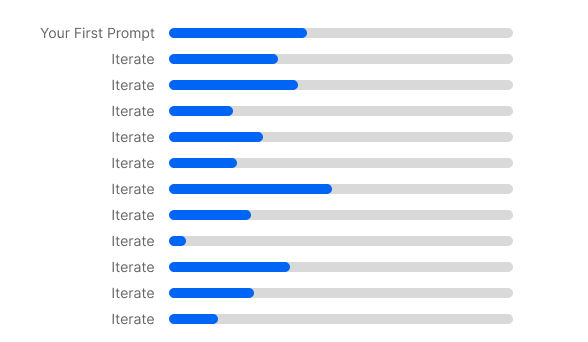
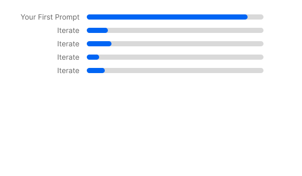

Cheat Sheet
The parts worth keeping. Use this when you're about to prompt something important.
If you get your first prompt right


Lessons to carry away
- You don't fill every lever. You choose.
A throwaway question takes one line. A real design takes several. The judgment is knowing which. - Specificity and depth are dials, not switches.
If you don't set them, the AI sets them for you, and it guesses average. - A clean restart beats ten corrections.
When it's locked onto the wrong idea, start over with a better prompt instead of arguing it back. - Good prompting is just clear thinking, written down.
If you can't say what you want, the AI can't either.